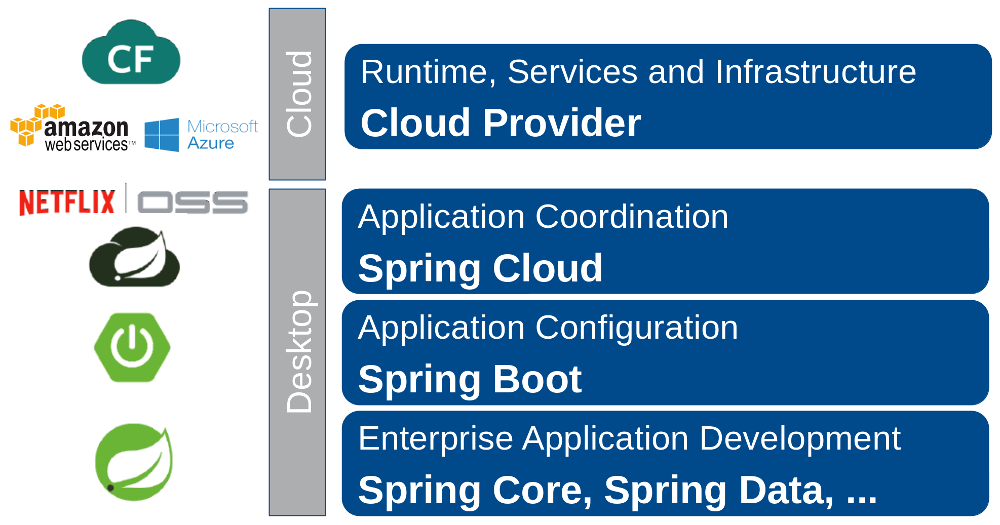

Spring Basics Training
https://andifalk.github.io/
spring-basics-training/ presentation/index.html
Andreas Falk
NovaTec Consulting GmbH
andreas.falk@novatec-gmbh.de@NT_AQE, @andifalk

A little bit of history
2002
Rod Johnson had an idea and wrote a book:
“J2EE Design & Development”
First source code available

2004
Published Spring 1.0
Java 1.3 & 1.4 compatible

2006-2009
Spring 2.x
Java 5 & 6 compatible
Java EE 5 compliant
2009-2013
Spring 3.x
Java 6 & 7 compatible
Java EE 6 compliant
Rod Johnson leaves Sping
Founded Pivotal
2014-2017
Spring 4.x
Java 7 & 8 compatible
Java EE 6 & 7 compliant
Published Spring Boot 1.0 (2014)
2018, 2019, ...
Spring 5.x
Spring Boot 2.0
Java 8+ compatible
Java EE 7+ compliant
Spring Overview
Spring IO Platform

Spring IO Platform
“Production-Ready” platform
Certified for Java 7, Java 8 & Java 9
Tested for 3rd party dependencies
https://platform.spring.io/platform
Spring IO Platform
Maven BOM
io.spring.platform
platform-bom
Brussels-SR7
pom
import
Spring Boot
Spring Auto-Configuration
“Convention over Configuration”
https://projects.spring.io/spring-boot
Spring Boot
Build a working Spring App in 5 minutes

https://start.spring.io
Spring Cloud Data Flow
Successor of Spring XD
Toolkit for building data integration and real-time data processing pipelines
Pipelines consist of Spring Boot apps
https://start.spring.io
Spring Cloud
Patterns for Cloud-Native Applications
Configuration management
Service discovery
Circuit breakers
https://projects.spring.io/spring-cloud
Spring Integration
Implementation of well-known Enterprise Integration Patterns (EAI)
Integration with External Systems
ReST/HTTP, Twitter, EMail, JMS, FTP, ...
https://projects.spring.io/spring-integration
Spring Integration
Enterprise Integration Patterns (EAI)

Spring Kafka
Developing Kafka-based messaging solutions
Add Kafka support to Spring Integration
https://projects.spring.io/spring-kafka
Spring Batch
Developing batch processing applications
Chunk based processing
Start/Stop/Restart
Retry/Skip
https://projects.spring.io/spring-batch
Spring Web
Servlet-based Web (Spring MVC)
Reactive Web (Spring WebFlux)
Restful services
Thymeleaf, JSF, Tapestry, ...
https://projects.spring.io/spring-framework
Spring Web Stacks

Spring Data
Spring Data JDBC
JDBC based repositories
This is NOT an ORM
Support for @Query annotations
https://projects.spring.io/spring-data-jdbc
Spring Data JPA
Enhanced support for JPA based data access layers
Supports Hibernate, EclipseLink as JPA providers
Pagination support, dynamic query execution
https://projects.spring.io/spring-data-jpa
Spring Data JPA
Automatic Database Migrations


https://flywaydb.org
https://www.liquibase.org
Spring Data MongoDB
Data access for MongoDB document database
Mongo Template support
POJO centric model for interacting with a MongoDB DBCollection
https://start.spring.io
Spring Data Redis
Redis Template support
Repository for key/value store
https://projects.spring.io/spring-data-redis
Spring Framework
Core spring functionality
Application context & Beans
Dependency Injection
https://projects.spring.io/spring-framework
Spring Framework
Version 3.2.x
“Legacy”
Supports Java 6 / 7
EOL: End of 2016
https://spring.io/blog/2015/06/15/spring-framework-3-2-x-eol-on-dec-31-2016
Spring Framework
Version 4.3.x
Long term version
Supports Java 6 / 7 / 8
EOL: 2020
https://github.com/spring-projects/spring-framework/wiki
Spring Framework
Version 5.0
Current version
Supports Java 8 / 9 / 10+
https://github.com/spring-projects/spring-framework/wiki
Spring Security
Authentication
SSO (OAuth2, OpenID Connect)
Authorization
Encryption
https://projects.spring.io/spring-security
Reactor
Reactive library for building non-blocking applications
Based on Reactive Streams Specification
https://projectreactor.io
https://www.reactive-streams.org
Cloud Platform Support
Azure Cloud

Google Cloud

Spring Core Framework
Simplify Java (Kotlin) Development
Lightweight development with POJOs
Loose coupling through Dependency Injection
Declarative programming
Eliminating boilerplate code
Lightweight Development
Plain Old Java Objects
vs.
Enterprise Java Beans (1.x)
EJB 1.1

Spring POJO

Dependency Injection (DI)
SOLID
Single Responsibility Principle
Open/Closed Principle
Liskov's Substitution Principle
Interface Segregation Principle
Dependency Inversion Principle
Dependency Inversion Principle
Depend on abstractions, not on concretions

Inversion of Control Patterns
Service Locator
Dependency Injection
https://martinfowler.com/articles/injection.html
JSR 330 Dependency Injection
javax.inject
javax.inject
1
@Inject
public void setMyService(MyService myService) {
...
}
Spring Dependency Injection
@Autowired
public void setMyService(MyService myService) {
...
}
Declarative Programming
Declarative Cross-Cutting Concerns
Aspect-Oriented Programming (AOP)
Transaction Management
Security
Logging
Aspect-Oriented Programming
Spring AOP vs. AspectJ

Eliminate Boilerplate Code
Pure JDBC Code
public List<Person> findAll() {
List<Person> result = new ArrayList<>();
try (Connection conn = dataSource.getConnection()) {
statement = conn.prepareStatement(
"select * from person");
rs = statement.executeQuery();
while (rs.next()) {
person = new Person();
…
result.add(person);
}
} catch (SQLException e) {…} finally {}
return result;
}
JDBC Template (Java 7)
public List<Person> findAll() {
return jdbcTemplate.query("select * from person",
new RowMapper<Person>() {
@Override
public Person mapRow(ResultSet arg0, int arg1)
throws SQLException {
Person person = new Person();
…
return person;
}
});
}
JDBC Template (Java 8)
public List<Person> findAll() {
return jdbcTemplate.query("select * from person",
(rs, rowNum) -> {
Person person = new Person();
…
return person;
});
}
Other Templates
TransactionTemplate
JmsTemplate
RestTemplate
OAuth2RestTemplate
...
Spring Core Modules

Spring Core Module Libraries

Beans & Contexts
Application Context

Spring Bean Configuration
XML
Java Configuration
Annotations (Component Scan)
A simple Spring Bean
public interface BeanOne {
String whoAmI();
}
public class BeanOneImpl implements BeanOne {
private final BeanTwo beanTwo;
public BeanOneImpl(BeanTwo beanTwo) {
this.beanTwo = beanTwo;
}
@Override
public String whoAmI() {
return BeanOneImpl.class.getSimpleName()
+ ": " + beanTwo.whoAmI();
}
}
XML Application Context
public class XmlApplication {
public static void main(String[] args) {
ApplicationContext ctx =
new ClassPathXmlApplicationContext(
"application.xml");
BeanOne beanOne = ctx.getBean(BeanOne.class);
beanOne.whoAmI();
}
}
Another simple Spring Bean
public interface BeanOne {
String whoAmI();
}
@Component public class BeanOneImpl implements BeanOne {
private final BeanTwo beanTwo;
@Autowired
public BeanOneImpl(BeanTwo beanTwo) {
this.beanTwo = beanTwo;
}
@Override
public String whoAmI() {
return BeanOneImpl.class.getSimpleName()
+ ": " + beanTwo.whoAmI();
}
}
Java Application Context
@ComponentScan(basePackages = "com.example")
@Configuration
public class ApplicationConfiguration {
}
public class JavaApplication {
public static void main(String[] args) {
ApplicationContext ctx
= new AnnotationConfigApplicationContext(
ApplicationConfiguration.class);
BeanOne beanOne = ctx.getBean(BeanOne.class);
beanOne.whoAmI();
}
}
General Bean Scopes
Singleton
Prototype
Singleton Scope

Prototype Scope

Web Bean Scopes
Request
Session
Global Session
Application
Spring Lifecycle
Starting Lifecycle

Stopping Lifecycle

Spring Boot & Microservices
Microservices
“Agile SOA”The Well Defined Monolith

“Big Ball Of Mud” Monolith

From Monolith to Microservices

Autonomic Microservices


CI Pipelines for Microservices

Size of Microservices (I)

Size of Microservices (II)

Size of Microservices (III)

Size of Microservices (IV)

Cloud Native (I)
“Cloud-native is an approach to building and running applications that fully exploits the advantages of the cloud computing delivery model.”Cloud Native (II)
The Twelve Factory App

Cloud Native (III)
On Premise
Infrastructure as a service (IaaS)
Platform as a service (PaaS)
Software as a service (SaaS)
Function as a service (FaaS)
Cloud Native (IV)

Spring Cloud Native Stack

Spring Boot Components